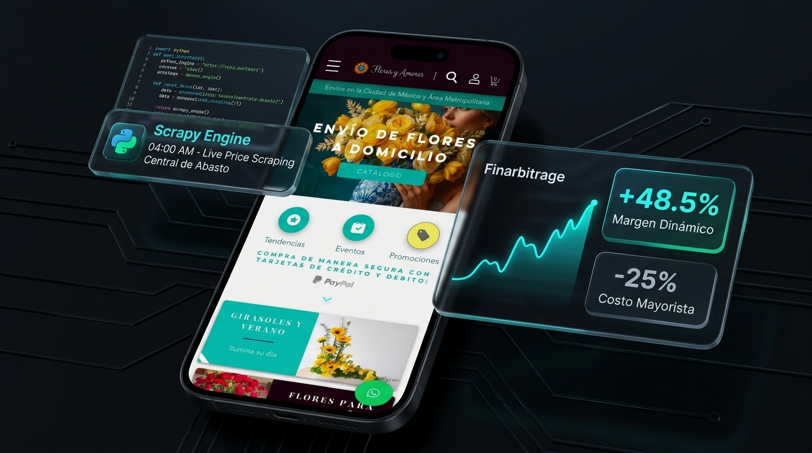

Estrategia Normativa y Financiera: Soluciones que Operan, Ahorran y Facturan.
Arquitectura de datos y rigor técnico para blindar operaciones complejas y maximizar rendimientos institucionales.
Ingeniería y despliegue en el terreno donde la normativa y los procesos colapsan.
description
Ver enfoque metodológico completo y fundamentos directivos
expand_more
Solvencia Regulatoria y Modernización Presupuestaria
Especialización en fiscalización superior ante OIC/ASF, regularización de millones de registros de nómina y automatización de trámites ciudadanos.
Algoritmos de Rentabilidad & Reingeniería de Flujos
Arbitraje algorítmico matutino (Central de Abasto 04:00 AM), automatización de compras e infraestructura e-commerce de alta conversión.
Economía, Finanzas Públicas & Blindaje Normativo
Paris Ramos · Pivote Técnico & Algorítmico
Backend Integrado, Automatización & Machine Learning
Ingeniería y despliegue en el terreno donde la normativa y los procesos colapsan.
Estrategia Normativa & Modelos de Negocio en Producción
Soluciones diseñadas desde el terreno operativo: resolviendo pasivos institucionales y abriendo canales comerciales de alta rentabilidad con tecnología propietaria.
Sector Público e Instituciones
Blindaje normativo y modernización institucional. Migración de padrones críticos, fiscalización forense y automatización de trámites ciudadanos sin fricción operativa.
Auditorías ASF y OIC solventadas sin observaciones.
Conciliación fiscal masiva y 5k+ padrones regularizados.
Auditoría Forense y Padrones Masivos
Arquitecturas relacionales blindadas ante el OIC y la ASF para eliminar discrepancias de nómina.
Sistematización Normativa & Ventanilla Única
Reingeniería de trámites con cómputo en memoria para erradicar cuellos de botella.
Sector Privado y E-Commerce
Infraestructura transaccional directa al consumidor (D2C) y data pipelines autónomos para capturar márgenes en cadenas de suministro de alta variabilidad.
Ventas D2C en marca propia con rentabilidad neta.
Ahorro en compras con arbitraje diario 04:00 AM.
E-Commerce Transaccional de Extremo a Extremo
Pasarelas Stripe/Mercado Pago, ruteo georreferenciado y tasa de conversión optimizada.
Inteligencia de Precios, ETL & Scraping
Bots autónomos para monitoreo de subastas matutinas y compra mayorista automatizada.
Casos Insignia Desplegados
SICA V3.0 — Control Masivo de Asistencia & Nómina
Diseño y arquitectura integral para más de 2,800 trabajadores públicos. Motor de reglas en memoria O(1) que erradica consultas N+1, blindado ante auditorías del Órgano Interno de Control y conciliación contra el SAT.

E-Commerce floresyamores.mx & Data Pipeline
Diseño, implementación y operación continua de canal digital D2C vinculado a bots extractivos en Central de Abasto para arbitraje automático de márgenes y optimización logística en CDMX.

Paris Alejandro Ramos de Cervantes
Economista egresado · Maestría en Administración · Especialista en Modernización Institucional & Arbitraje Algorítmico
"Paris Alejandro Ramos de Cervantes — Economista egresado con Maestría en Administración y más de una década liderando modernización institucional en el Gobierno Federal y modelos algorítmicos en el sector privado."
Traductor de alta fidelidad entre la normatividad hacendaria (SAT, OIC, ASF) y arquitecturas resilientes en producción. Disponible para dirección técnica estratégica, resolución de pasivos de nómina institucional y optimización algorítmica de márgenes comerciales.